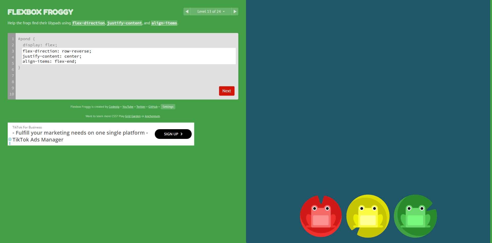
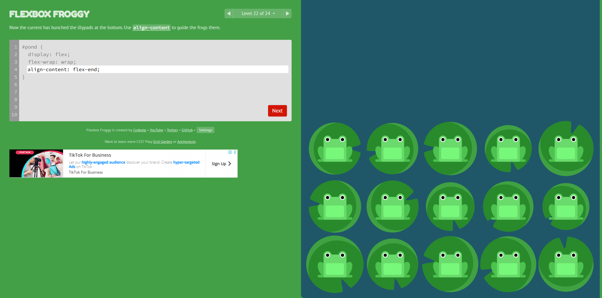

Sobre a atividade
O Flexbox Froggy é um jogo utilizado para aprender propriedades do CSS Flexbox de uma forma prática e ditática
A seguir estão dois níveis realizados a,com seus respectivos prints e explicações das propriedades utilizadas.
NÍVEL 13
Organizando os sapos
Print do nível 13

CSS utilizado
#pond {display: flex;
flex-direction: row-reverse;
justify-content: center;
align-items: flex-end;}1. display: flex;
O display: flex transforma o elemento em um container Flexbox
Assim, os elementos que estão dentro dele podem ser organizados utilizando as propriedades do Flexbox.
2. flex-direction: row-reverse;
A propriedade flex-direction define direção em que os elementos serão organizados
O valor row-reverse coloca os elementos em uma linha, mas na ordem inversa, da direita para a esquerda.
3. justify-content: center;
A propriedade justify-content controla o alinhamento dos elementos no eixo principal.
O valor center deixa os sapos centralizados no espaço disponível.
4. align-items: flex-end;
A propriedade align-items controla o alinhamento dos elementos no eixo transversal.
O valor flex-end coloca os sapos na parte inferior do container.
NÍVEL 22
Organizando os sapos em várias linhas
Print do nível 22

CSS utilizado
#pond {
display: flex;
flex-wrap: wrap;
align-content: flex-end;}1. display: flex;
>O display: flex transforma o elemento em um container Flexbox.
Isso permite controlar a posição e o alinhamento dos sapos através das propriedades do Flexbox.
2. flex-wrap: wrap;
A propriedade flex-wrap define se os elementos podem passar para uma nova linha.
Com o valor wrap, quando não existe espaço suficiente para todos os sapos na mesma linha, eles são distribuídos em outras linhas.
3. align-content: flex-end;
A propriedade align-content controla o posicionamento das linhas dentro do container.
O valor flex-end faz com que as linhas fiquem agrupadas na parte inferior do container.